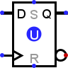
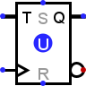
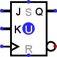
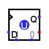
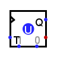
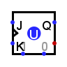
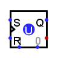

D / T / J-K / S-R Flip-Flop
D / T / J-K / S-R Flip-Flop
| Library: | Memory |
| Introduced: | 2.0 Beta 1 |
| Appearance: |
| D | T | J-K | S-R | |
|---|---|---|---|---|
|
Logisim Evolution : Logisim HolyCross : |
 |  |  |

|
| Logisim Classique: |  |  |  |  |
Behavior
Each flip-flop stores a single bit of data, which is emitted through the Q output on the east side. Normally, the value can be controlled via the inputs to the west side. In particular, the value changes when the clock input, marked by a triangle on each flip-flop, rises from 0 to 1 or vice versa, depending on the configuration of the Trigger attribute ; on this edge, the value changes according to the table below.
There are two other inputs on the north and south sides. S (Set) to force the value of the flip-flop to 1 and R (Reset) to force the value of the flip-flop to 0.
| D | T | J-K | S-R | ||||||||||||||||||||||||||||||||||||||||||||||||||||||||||
|---|---|---|---|---|---|---|---|---|---|---|---|---|---|---|---|---|---|---|---|---|---|---|---|---|---|---|---|---|---|---|---|---|---|---|---|---|---|---|---|---|---|---|---|---|---|---|---|---|---|---|---|---|---|---|---|---|---|---|---|---|---|
|
|
|
|
-
D Flip-Flop: When the clock triggers, the value remembered by the flip-flop becomes the value of the D input (Data) at that instant.
-
T Flip-Flop: When the clock is triggered and the T (Toggle) input is at 1, the value stored by the flip-flop is inverted. If the T (Toggle) input is 0, the value remains unchanged.
-
J-K Flip-Flop: When the clock triggers, the value remembered by the flip-flop toggles if the J and K inputs are both 1 and the value remains the same if both are 0; if they are different, then the value becomes 1 if the J (Jump) input is 1 and 0 if the K (Kill) input is 1.
-
S-R Flip-Flop: When the clock triggers, the value remembered by the flip-flop remains unchanged if R and S are both 0, becomes 0 if the R input (Reset) is 1, and becomes 1 if the S input (Set) is 1. The behavior in unspecified if both inputs are 1. (In Logisim, the value in the flip-flop remains unchanged). Note: For this flip-flop, do not confuse the synchronous R S inputs on the west side with the asynchronous R S inputs on the north and south sides.
By default, the clock triggers on a Rising edge that is, when the clock input changes from 0 to 1. However, the Trigger attribute allows this to change to a Falling edge when the clock input changes from 1 to 0. There are also high level for the duration that the clock input is 1), or a low level for the duration that the clock input is 0. The level-trigger options are unavailable for the T and J-K flip-flops, because a flip-flop behaves unpredictably when told to toggle for an indeterminate amount of time.
Pins
All inputs or outputs have a bit width of 1.
- West edge: marked by triangle or the label E
- Clock input: This signal triggers the update of the scale value according to the inputs on the west side. The trigger mode is determined by the Trigger property: Rising edge, Falling edge, Low level, High level.
- West edge: other labeled pin(s)
- These inputs control how the value of the flip-flop changes when the clock is triggered (see clock input and Trigger property). Their exact bhavior depends on the flip-flop; the above tables summarize their behavior.
- East edge: labeled Q, north end
- Outputs the value currently stored by the flip-flop.
- East edge, south end
- Outputs the complement of the value currently stored by the flip-flop.
- South edge: east end or center
- Asynchronous reset: When 0 or undefined (U), this input has no effect. As long as it is 1, the flip-flop's value is pinned to 0. This occurs asynchronously - that is, without regard to the current clock input value. As long as this is 1, the other inputs have no effect.
- South edge: west end or nort edge
- Asynchronous input set: When 1 or undefined (U), this input has no effect. When 1, the flip-flop's value is pinned to 1. This occurs asynchronously - that is, without regard to the current clock input value. As long as this input is 1, the other inputs have no effect, except for the asynchronous reset input, which has priority.
Attributes
- Trigger
-
Configures how the clock input is interpreted. The value:
rising edge indicates that the flip-flop should update its value at the instant when the clock rises from 0 to 1.
falling edge value indicates that it should update at the instant the clock falls from 1 to 0.
high level value indicates that the flip-flop should update continuously whenever the clock input is 1.
low level value indicates that it should update continuously when the clock input is 0. Note that the latter two options are unavailable for T and J-K flip-flops. - Label
- The text within the label associated with the flip-flop.
- Label Font
- The font with which to render the label.
- Appaerance
- Logisim-HolyCross / Logsim-Evolutions: New presentation of flipflops in the IEC way. Classic Logisim: Presents flipflops as the legacy of logisim
Poke Tool Behavior
Clicking a flip-flop using the Poke Tool( ) toggles the bit stored in the flip-flop, unless the asynchronous set/reset inputs currently pin the flip-flop's value.
) toggles the bit stored in the flip-flop, unless the asynchronous set/reset inputs currently pin the flip-flop's value.
Text Tool Behavior
Allows the label associated with the component to be edited.
Back to Library Reference